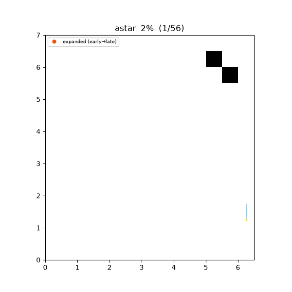
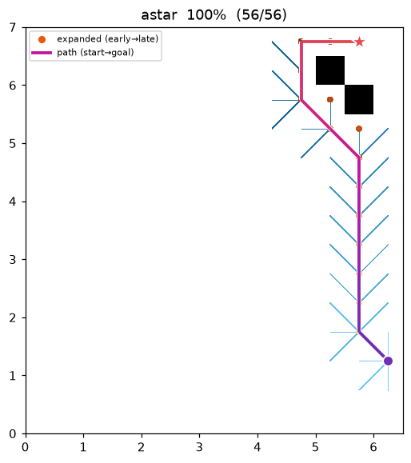
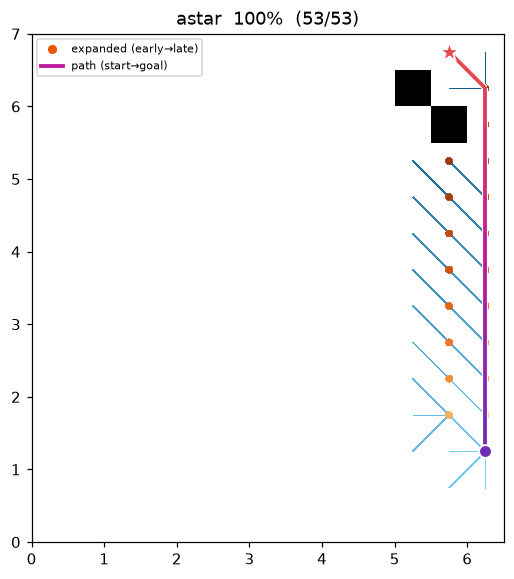

A* (A-star)¶
| 항목 | 내용 |
|---|---|
| 분류 | informed graph search |
| 요구 capability | DiscreteSpace (neighbors + heuristic) |
| 완전성 | complete (유한 그래프, 비음수 비용) |
| 최적성 | cost 최적 — heuristic 이 admissible 할 때 (w = 1.0) |
| 복잡도 | 최악 O(b^d) 시간/공간, heuristic 품질에 좌우 |
| 원 논문 | Hart, Nilsson & Raphael (1968) 1 · weighted 변형: Pohl (1970) 3 |
배경¶
A1 는 SRI 의 Shakey 로봇 프로젝트에서 탄생한, 로보틱스와 가장 인연이 깊은 경로 탐색 알고리즘이다. Dijkstra 의 누적 비용 g(n) 에 goal 까지의 예상 잔여 비용 h(n) 을 더한 f(n) = g(n) + h(n) 순서로 노드를 확장한다. h 가 실제 잔여 비용을 절대 과대평가하지 않으면(admissible), A 는 최적 경로를 보장하면서 Dijkstra 보다 훨씬 적은 노드를 확장한다 — 같은 정보로 이보다 적게 확장하는 admissible 알고리즘은 없다는 의미에서 "optimally efficient" 하다1 2.
Pohl 의 weighted A3 는 f = g + w·h (w > 1)* 로 heuristic 을 부풀려 탐색을 goal 쪽으로 더 공격적으로 편향시킨다. 최적성은 w 배 이내 준최적(bounded suboptimal)으로 완화되지만 확장 노드가 크게 줄어, 실시간 replanning 에서 널리 쓰인다.
동작 원리¶
maze01 에서의 탐색. Dijkstra 와 달리 파면이 goal 방향으로 쏠리며 자라는 것이 보인다.

탐색 중간 과정 (좌 → 우: 초반 / 중반 / 최종 경로):
 |
 |
 |
open01 최종 결과 — 장애물이 적으면 거의 직선 대각으로만 확장한다:

ASTAR(start, goal):
g[start] ← 0; open ← priority queue keyed by f = g + w·h
while open is not empty:
v ← open.pop_min() # 최소 f
if v == goal: return reconstruct(v)
if v already settled: continue # lazy deletion
for (u, c) in neighbors(v):
if g[v] + c < g[u]: # relaxation (Dijkstra 와 동일)
g[u] ← g[v] + c; parent[u] ← v
open.push(u, g[u] + w·h(u, goal))
return failure
Dijkstra 와의 차이는 우선순위 키 한 줄뿐이다. h ≡ 0 이면 정확히 Dijkstra 로 퇴화한다.
Heuristic — octile distance¶
이 저장소의 grid 는 8-connected (직교 1.0, 대각 √2 × resolution) 이므로 heuristic 은 octile distance 를 쓴다:
h(a, b) = (max(Δrow, Δcol) − min(Δrow, Δcol)) + √2 · min(Δrow, Δcol)
장애물이 전혀 없을 때의 실제 이동 비용과 정확히 일치하므로 admissible 하고 consistent 하다.
(heuristic 계산은 DiscreteSpace capability 의 일부로 맵 adapter 가 제공한다 — 알고리즘은
이동 모델을 모른다.)
측정치 (Python, w = 1.0, trace on):
| map | path cost | expanded nodes | 참고: Dijkstra expanded |
|---|---|---|---|
| maze01 | 28.728 (최적, Dijkstra 와 동일) | 108 | 211 |
| open01 | 25.213 (최적) | 71 | 267 |
재현:
python python/demos/demo_astar.py \
--map maps/grid/maze01.yaml --scenario maps/scenarios/maze01_s1.yaml \
--params configs/global_planning/astar.yaml --trace out/astar.jsonl
python tools/viz/replay.py out/astar.jsonl --gif out/astar.gif --snapshots out/astar_snaps/
성질¶
- 완전성: 유한 그래프 + 비음수 비용에서 완전.
- 최적성: h admissible + w = 1.0 → 최적 보장. consistent h 면 각 노드를 한 번만 확장한다. w > 1 → 반환 경로 비용 ≤ w × 최적 (bounded suboptimal)3.
- 복잡도: heuristic 품질에 따라 Dijkstra 수준(h 무정보)부터 직선 경로 수준(h 완벽)까지.
최적성 근거와 증명¶
기호: \(f(n)=g(n)+h(n)\), \(g\) 는 시작점부터의 실제 비용, \(h\) 는 goal 까지 추정, \(h^*(n)\) 는 참 잔여 최적 비용, \(C^*\) 는 최적해 비용.
- Admissible (허용성): \(0\le h(n)\le h^*(n)\;\;\forall n\) — 절대 과대평가하지 않는다.
- Consistent (일관성): 모든 간선 \((n,n')\) 에서 \(h(n)\le c(n,n')+h(n')\) 이고 \(h(\text{goal})=0\).
정리 1 (admissible \(\Rightarrow\) 최적). \(h\) 가 admissible 이면 A* 가 반환하는 경로는 비용 최적이다.
증명. A* 가 \(g(G_2)>C^*\) 인 goal \(G_2\) 를 확장 선택한다고 하자. \(G_2\) 는 goal 이라 \(h(G_2)=0\), 즉 \(f(G_2)=g(G_2)>C^*\). 종료 시점에 어떤 최적 경로 위의 노드 \(n\) 이 open 에 존재한다 (확장된 접두부에서 goal 로 가는 경로가 frontier 를 가로지르므로). admissibility 에 의해
따라서 \(f(n)\le C^*<f(G_2)\) 이고 A* 는 \(G_2\) 보다 \(n\) 을 먼저 확장한다 — 모순. 그러므로 선택되는 goal 은 \(g=C^*\). ∎
정리 2 (consistent \(\Rightarrow\) admissible & 재확장 없음). \(h\) 가 consistent 이면 (i) admissible 이고, (ii) 임의 경로에서 \(f\) 가 비감소하여 각 노드는 최대 한 번만 확장된다.
증명. (i) 최적 경로를 따라 \(h(n)\le c(n,n')+h(n')\) 를 goal 까지 텔레스코핑하면 \(h(n)\le h^*(n)\). (ii) 간선 \((n,n')\) 에서 \(f(n')=g(n)+c(n,n')+h(n')\ge g(n)+h(n)=f(n)\). ∎
Weighted A* 의 준최적 한계. \(f=g+w\,h,\;w\ge1\) 이면 반환 해 비용 \(\le w\cdot C^*\).
증명 스케치. \(G_2\) 선택 시 최적 경로 위 open 노드 \(n\) 에 대해
(마지막에서 두 번째 부등호는 \(w\ge1\) 과 admissibility). ∎
octile heuristic 이 consistent 인 이유. octile 값은 장애물이 전혀 없을 때의 실제 최소 이동 비용, 즉 자유공간 거리 \(d_{\text{free}}\) 다. \(d_{\text{free}}\) 는 거리(metric)이므로 삼각부등식을 만족하고, 인접 셀 한 스텝의 간선 비용은 정확히 \(d_{\text{free}}\) 와 같다(\(c=1\) 직교, \(\sqrt2\) 대각). 따라서 임의 간선 \((n,n')\) 에서
가 성립해 consistent 하다. 장애물이 생기면 실제 비용은 늘기만 하므로 \(h\le h^\ast\) (admissible). ∎
A* = 재가중 그래프 위 Dijkstra (potential 관점). consistent \(h\) 를 각 노드의 potential 로 보고 간선을 재가중하자:
(비음수는 consistency 정의 그 자체다). 경로를 따라 \(\tilde c\) 를 누적하면 중간 \(h\) 항이 텔레스코핑으로 소거되어
이다. \(h(s)\) 는 상수이므로 \(f\) 순으로 꺼내는 A* 는 \(\tilde g\) 순으로 꺼내는 재가중 그래프 위 Dijkstra 와 완전히 동일하다. 그러면 Dijkstra 의 비음수 최적성(위 정리)이 그대로 A* 최적성으로 이식되며, 이는 정리 1·2 의 대안 증명이다. \(h\equiv0\) 이면 재가중이 항등이라 원래 Dijkstra 로 퇴화한다. ∎
반례: weighted A* (w = 3) 의 준최적성¶
\(w>1\) 이면 heuristic 이 부풀어 탐색이 goal 로 공격적으로 쏠린다. 확장 노드는 줄지만(아래 20 → 16),
goal 근처 장애물을 성급히 한쪽으로 우회해 최적을 놓칠 수 있다. wastar_greedy01 에서:
| w = 1 (admissible) | w = 3 (weighted) | |
|---|---|---|
| path cost | 11.414 (최적 \(C^\ast\)) | 14.243 |
| expanded | 20 | 16 |

| w = 3 경로 — 준최적 | w = 1 최적 |
|---|---|
 |
 |
반환 비용은 \(14.243\approx1.25\,C^\ast\) 로, 준최적 한계 \(w\,C^\ast=3C^\ast\) 안에 있다(정리의 bounded
suboptimal). 상한 \(w\,C^\ast\) 는 느슨하고 실측 준최적률은 보통 훨씬 작지만, 최적은 아니다 —
확장 노드를 20 → 16 으로 줄인 대가다. (configs/global_planning/astar.yaml 의 heuristic_weight
를 3.0 으로 두고 위 데모를 재실행.)
파라미터¶
| 이름 | 타입 | 기본값 | 범위 | 설명 |
|---|---|---|---|---|
heuristic_weight |
float | 1.0 | [1.0, 5.0] | f = g + w·h 의 w. 1.0 = admissible 최적, 초과 = weighted A* |
방출 trace 이벤트¶
planning_started → (node_expanded, edge_added)* → path_found → planning_finished
References¶
-
Hart, P. E., Nilsson, N. J., & Raphael, B. (1968). "A Formal Basis for the Heuristic Determination of Minimum Cost Paths." IEEE Transactions on Systems Science and Cybernetics, 4(2), 100–107. doi:10.1109/TSSC.1968.300136 ↩↩↩
-
Hart, P. E., Nilsson, N. J., & Raphael, B. (1972). "Correction to 'A Formal Basis for the Heuristic Determination of Minimum Cost Paths'." SIGART Newsletter, 37, 28–29. doi:10.1145/1056777.1056779 ↩
-
Pohl, I. (1970). "Heuristic search viewed as path finding in a graph." Artificial Intelligence, 1(3–4), 193–204. doi:10.1016/0004-3702(70)90007-X ↩↩↩